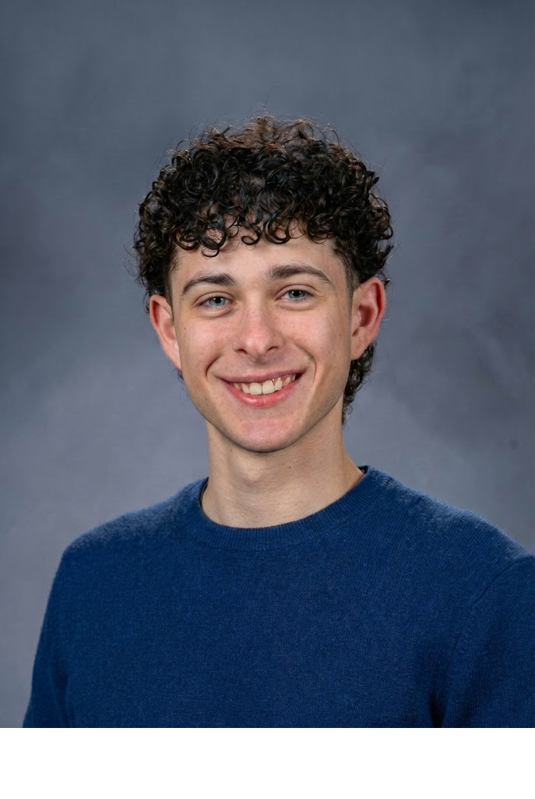

About Me
Laith Jaroudi
I am a cognitive science researcher. I study memory, attention, and music cognition. I graduated from UC Santa Barbara in 2026 with a B.S. in Psychological & Brain Sciences (Honors) and minors in Philosophy and Media Arts & Design.
From 2024 to 2026 I was a research assistant in the Memory & Decision Making Lab, where I worked on a 64-channel EEG study of recognition memory and completed an honors thesis on rhythm and temporal order memory. I have also produced and DJed techno and ambient music for eight years.

Education
UC Santa Barbara
B.S. in Psychological & Brain Sciences (Honors)
Minors: Philosophy (Cognitive Theory Focus), Media Arts & Design
Google UX Design Professional Certificate
Professional Certificate
Skills & Tools
Research & Statistics
- Experimental Design
- Survey Design
- Repeated-Measures & Factorial ANOVA
- Linear Mixed-Effects Models
- EEG Data Collection & Preprocessing
- IRB Documentation
Data & Analysis Tools
- R
- Python
- SPSS
- SQL
- Excel
- MATLAB / EEGLAB
- Qualtrics
- jsPsych
Music & Design
- Ableton Live
- FL Studio
- Sound Design
- Music Production
- Figma
- Adobe Creative Suite
Languages
- English (Native)
- Arabic (Native)
- French (Advanced)
- Spanish (Advanced)
I design experiments and surveys, collect behavioral and EEG data, and analyze the results in R, SPSS, and MATLAB. Alongside research I produce music and run events.
Experience
Lead Honors Researcher
Memory & Decision Making Lab, UC Santa Barbara
"Techno on the Brain: Rhythmic Scaffolding and Visual Temporal Order Memory." First-author honors thesis. A within-subjects experiment with 59 participants and four auditory conditions. I programmed the task in jsPsych and analyzed accuracy in R with repeated-measures ANOVAs (Bonferroni-corrected) and linear mixed-effects models. The result was a null effect of rhythm on memory. Advisor: Dr. Michael Miller. Graduate supervisor: Luna Li.
Research Assistant
Memory & Decision Making Lab, UC Santa Barbara
Assisted a graduate researcher on a 64-channel EEG study of recognition memory. Collected behavioral and EEG data, preprocessed recordings in MATLAB and EEGLAB (filtering, ICA artifact rejection, epoching), and supported ERP analysis in R. Recruited and scheduled participants, ran consent and intake sessions, maintained IRB documentation and amendments, trained incoming research assistants, and presented literature reviews at lab meetings.
Course Research Project
Laboratory in Advanced Research Methods (PSY 120L), UC Santa Barbara
"The Effect of Environmental Sound Effect on False Memory through the DRM Paradigm." A 2×2 between-subjects experiment with 67 participants, built in Qualtrics and analyzed in SPSS with a factorial ANOVA and a Pearson correlation. Best Poster at the course colloquium.
Market Intelligence Analyst (Intern)
Industry Intelligence Inc., Los Angeles
Organized large corporate-structure datasets and carried out competitive landscape analysis in Excel and SQL.
Co-founder
NOTARAVE, UC Santa Barbara
Co-founded an electronic music collective run with the Music Production Club (150+ members). Booked local Santa Barbara artists and ran promotion. 15+ events, 10,000+ total attendees, and 1,300+ Instagram followers.
Sound Designer & Music Producer
Freelance
Freelance sound design and music production in Ableton Live and FL Studio. I produce and DJ techno and ambient music.
Event Production Lead
TEDxYouth@ACS, Beirut
Led a 10-person video team for livestream, recording, and post-production. The footage was published on the TEDx Talks YouTube channel.
Beyond the Work
I am based in Los Angeles. My research interests are memory, attention, and music cognition.
I speak English and Arabic natively, and French and Spanish at an advanced level. Outside research I produce and DJ techno and ambient music.
I am open to research, analyst, and music-industry roles.